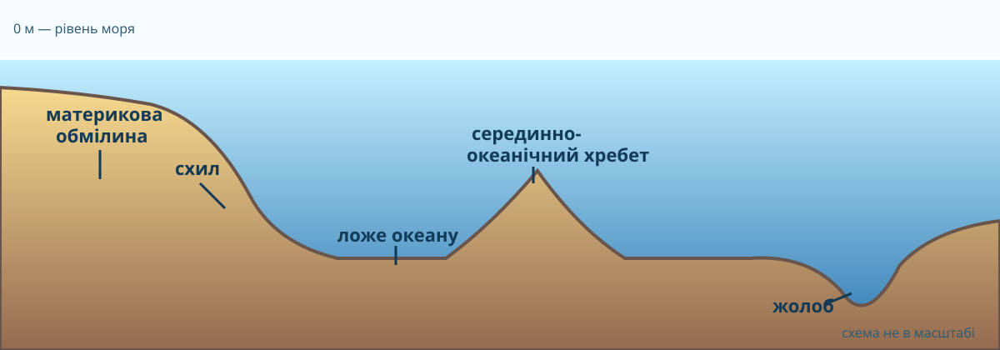

🎯 Місія океанографа
Читаюбатиметричну карту як джерело даних
Розрізняюшельф, схил, ложе, хребет і жолоб
ЗнаходжуМаріанську западину на карті
Доводжувисновок через CER і числа
01
Спочатку — загадка
Чи може «найдовша гірська система Землі» лежати переважно під водою?
02
Три реальні способи «побачити» дно
Порівняйте: глобальна батиметрія, детальна карта жолоба і рельєф Атлантики.


03
Анатомія океанічного дна
Натискайте терміни після того, як самі знайдете їх на профілі.

04
Жива батиметрична карта світу
Збільшуйте масштаб. Маркери ведуть до Маріанської западини, Серединно-Атлантичного хребта, Пуерто-Риканського жолоба та інших форм.
Підкладка Esri World Ocean Base використовує батиметричні та гідрографічні набори, зокрема GEBCO/NOAA/IHO. На карті працюйте не за «кольором на око», а за просторовою формою й підписами.
05
Тренажер глибини
Рухайте повзунок і оцініть, до якої частини рельєфу може належати точка. Це лише перша гіпотеза: остаточний висновок потребує форми й положення на карті.
Ймовірна зона: материкова обмілина.
06
Зіставте форму і доказ
Не за назвою, а за геоморфологічною ознакою.
Мілководна вирівняна окраїна материка
Різкий перепад від ~200 м до кількох км
Довга підводна гірська система в центрі океану
Вузька смуга з глибинами понад 8–10 км
Великі відносно вирівняні глибоководні простори
07
Доказова задача: «10 900 м = вся Маріанська западина»?
Учень побачив число близько 10,9 км для Challenger Deep і написав: «Отже, вся Маріанська западина має глибину 10,9 км».
Спростування: число характеризує найглибшу виміряну ділянку Challenger Deep, а не кожну точку жолоба. Потрібні профіль або растр глибин, координати вимірювань і легенда. NOAA наводить для Challenger Deep приблизно 10 935 м.
08
Як учені вимірюють те, чого не видно?
Сонар посилає звуковий імпульс до дна і вимірює час його повернення. Багатопроменевий сонар одночасно збирає багато точок.
2. Відбиття
сигнал повертається від дна3. Час
довший шлях → більша глибина4. Координати
кожна точка має x, y, z5. Карта
тисячі точок утворюють модель рельєфуЗа даними NOAA, сучасне картографування поєднує багатопроменевий сонар і супутникову альтиметрію; детальні суднові вимірювання мають значно вищу роздільну здатність.
09
▶ Deep-Sea Dialogues: Using Sound to Map the SeafloorКоротке відео NOAA: мапування дна звуком
Подивіться короткий матеріал і випишіть: «що вимірюють?» та «чому потрібні багато променів?».
Офіційне відео NOAA Ocean Exploration
10
Тепер — теорія
Після карти, профілю й даних збираємо систему понять.
Батиметрія
Вимірювання та картографування глибин і форми дна водойм та океану.
Підводна окраїна материка
Шельф переходить у материковий схил, а далі — у глибоководні частини океану.
Ложе океану
Містить абісальні рівнини, підводні гори й інші форми на значних глибинах.
Хребти й жолоби
Серединно-океанічні хребти пов’язані з розходженням плит; багато жолобів — із субдукцією.
11
Практична робота: позначаємо западини
На контурній карті Тихого океану позначте Маріанську западину. Додатково знайдіть Тонга та Кермадек. Біля кожної поставте знак «▼» і підпишіть назву.
- Знайдіть західну частину Тихого океану, Маріанські острови та Гуам.
- За живою картою визначте положення жолоба відносно острівної дуги.
- Позначте Маріанську западину не точкою, а видовженою смугою.
- Окремою точкою позначте Challenger Deep і підпишіть «≈10,9 км».
- Сформулюйте висновок: чому жолоб не можна показувати як одну точку?
🧾 CER-підсумок
Питання: чому твердження «дно океану — це велика рівна чаша» суперечить даним?
🏠 Домашнє завдання
§22. У підручнику опрацюйте рельєф дна океану. Зробіть мінітаблицю «форма → як розпізнати на карті → тектонічний зв’язок» для шельфу, хребта й жолоба.
📘 Електронний підручник: Географія, 6 клас, Запотоцький та ін., 2023 →
✅ Підсумковий тест — 10 балів
Тест відкривається лише після введення даних учня.
Введіть ім’я, прізвище та клас, щоб відкрити тест.
1. Що показує батиметрична карта?
2. Шельф — це…
3. Де найімовірніше знайти глибоководний жолоб?
4. Серединно-океанічний хребет пов’язаний переважно з…
5. Найглибша відома ділянка Маріанської западини — це…
6. Який прилад безпосередньо вимірює глибину звуком?
7. Чому число 10,9 км не описує всю Маріанську западину?
8. Яка форма є різким переходом від шельфу до великих глибин?
9. Який доказ найкраще спростовує тезу «дно океану рівне»?
10. Що треба зробити, щоб правильно позначити жолоб на контурній карті?